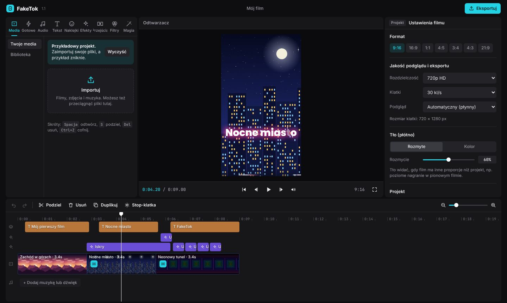

FakeTok
Montuj edity jak pro. Edytor wideo i ponad 70 gotowych animacji: postać 3D z Twoim skinem, glitche, przejścia i napisy. Wszystko w przeglądarce.
działa na: przeglądarce · Windows 10/11 · Androidzie · iPhonie (przez Safari)
Tniesz, kleisz, wymiatasz
Oś czasu jak w dużych programach. Wrzucasz klipy, dodajesz przejścia, efekty i napisy, a presety z zakładki Gotowe same robią phonk, velocity i zoomy na bit.
- 62efekty z podglądem
- 45przejść
- 14presetów do editów
- AIusuwanie tła

Bez After Effectsa
Wybierasz animację, wpisujesz swój nick, wgrywasz skin i pobierasz gotowy film. Zielone tło wycinasz w CapCut jednym kliknięciem. Możesz też od razu nałożyć animację na swoje nagranie.
- 74gotowe animacje
- 3Dpostać z Twoim skinem
- MP4do 1080p, 60 kl/s
- 9:16i 16:9 jednym klikiem
Najedź i patrz
Na każdy sprzęt
Windows 10 i 11Pobierz instalator AndroidFakeTok.apk · 5,4 MB
Android 7 lub nowszyPobierz aplikację PrzeglądarkaBez instalowania
komputer, telefon, iPhoneOtwórz teraz
Windows: jeśli wyskoczy „System Windows ochronił ten komputer”, kliknij Więcej informacji → Uruchom mimo to. Android: zezwól na instalację z tego źródła, a przy Play Protect wybierz Zainstaluj mimo to.
Wrzuć klipy
Otwórz edytor i przeciągnij swoje filmy, zdjęcia i muzykę.
Dodaj efekt albo preset
Kliknij efekt, przejście lub preset z zakładki Gotowe. Uderzenia same trafią w rytm muzyki.
Eksportuj
Kliknij Eksportuj i pobierz MP4 do 1080p. Bez znaku wodnego.